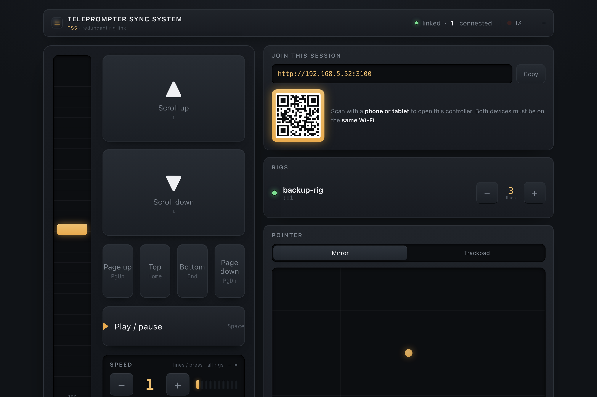

Redundant by design
Run the primary and one or more backups as a single surface. The spare is always exactly where it should be.
Your backup rig only matters if it's on the exact same line as the primary. TSS drives both from one keyboard and mouse — scroll, page, and click, mirrored across every rig over your local network.
TSS is a control surface, not a teleprompter — it drives whatever teleprompter app you already run, on every machine at once.
Run the primary and one or more backups as a single surface. The spare is always exactly where it should be.
Arrow keys, Page Up/Down, Home/End and Space relay to all rigs in real time — no macros, no fiddling.
Mirror cursor moves and clicks to the backups — the host keeps its own mouse, so nothing fights.
Nudge any rig a little faster or slower so two different teleprompter apps stay line-for-line aligned.
Scan a QR code to turn any phone or tablet into a wireless controller for the whole system.
Everything stays on your Wi-Fi. No accounts, no cloud, no data leaves the room.
Transport keys, a jog rail, per-rig and master speed, a pointer pad, live rig status, and a join QR — all in one window.

On the laptop with the keyboard, open TSS → Host a session and name your teleprompter app. The console and a join QR appear.
On each backup laptop, open TSS → Join and enter the host address. On a phone or tablet, just scan the QR.
Scroll, page, and click from the console — or straight from your keyboard and mouse. Every rig follows, instantly.
Free and open source. Download the macOS app and sync your rigs in minutes.
⬇ Download for macOS